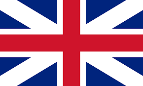
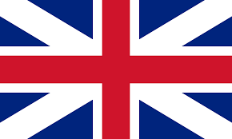

Club Baloncesto Breogán
Entidad baloncestística de la ciudad de Lugo, España.
Entidad baloncestística de la ciudad de Lugo, España.
 

El baloncesto era un deporte muy seguido en la ciudad de Lugo. Se dice que, en la década de 1940, más de mil personas llegaron a presenciar partidos de baloncesto en campos de tierra.
Los hermanos Varela-Portas decidieron, en el año 1966, fundar un club en Lugo, aprovechando la afición existente al deporte de la canasta. Para ello, escogerían el nombre Breogán, personaje de la mitología celta, y los colores azul celeste y blanco, de la bandera de Galicia, en lo que era un claro guiño de galleguidad y arraigo en plena dictadura.
En el año 1964, se disputó en Lugo la Copa del Generalísimo de baloncesto en el viejo Pabellón Municipal de los Deportes de Lugo.
Basketball was a highly followed sport in the city of Lugo. It is said that in the 1940s, more than a thousand people came to witness basketball games on dirt fields.
The Varela-Portas brothers decided, in 1966, to found a club in Lugo, taking advantage of the existing fondness for the sport of basketball. For this, they chose the name Breogán, a character from Celtic mythology, and the sky-blue and white colors of the Galician flag, in what was a clear nod to Galician identity and roots in the midst of dictatorship.
In 1964, the Copa del Generalísimo basketball tournament was held in Lugo at the old Municipal Sports Pavilion of Lugo.
Manolo Diaz
Vicente Ramos
Marcial Casanova
El Breogán tuvo un meteórico ascenso en el baloncesto español. En una primera época estuvo 4 temporadas en Primera División (de 1970-71 a 1973-74).
En 1970 el Breogán debutaría en la denominada por entonces Primera División, bajo el nombre de Breogán Fontecelta, con victoria por 88-68 ante el Real Club Náutico de Tenerife. El Breogán finalizó la temporada 1970-71 en novena posición, manteniendo la categoría en la promoción de descenso contra el CD Vasconia, actual Baskonia.
Destaca de la misma que el breoganista Alfredo Pérez fue el máximo anotador de la liga, hito que repetiría en la campaña 1972-73. Descendió en la temporada 1973-74 a la Segunda División, donde se proclamaría campeón (1974-75), y coexistió con el Club Baloncesto La Casera, que contaba con el apoyo de la marca de gaseosa homónima, y con jugadores como Bob Fullarton.
Breogán had a meteoric rise in Spanish basketball. In its early days, it spent 4 seasons in the First Division (from 1970-71 to 1973-74).
In 1970, Breogán would make its debut in what was then called the First Division, under the name Breogán Fontecelta, with a victory of 88-68 against the Real Club Náutico de Tenerife. Breogán finished the 1970-71 season in ninth position, maintaining its status in the relegation promotion against CD Vasconia, now known as Baskonia.
It is worth noting that Breogán player Alfredo Pérez was the league's top scorer, a feat he would repeat in the 1972-73 season. Breogán was relegated in the 1973-74 season to the Second Division, where it would become champion (1974-75), and coexisted with Club Baloncesto La Casera, which had the support of the homonymous soda brand, and with players like Bob Fullarton.
A pesar de que La Casera contaba con más jugadores lucenses, la práctica totalidad de la afición del baloncesto lucense era seguidora del Breogán debido a la gran identificación que existía con el club. El Breogán finalizó en primera posición y consiguió regresar a la máxima categoría, mientras que La Casera (que no consiguió el ascenso), terminó 2.º.
Despite La Casera having more players from Lugo, the vast majority of the basketball fans in Lugo were supporters of Breogán due to the strong identification with the club. Breogán finished in first position and managed to return to the top category, while La Casera (which did not achieve promotion) finished 2nd.
La Casera se disolvió al finalizar la temporada, y algunos jugadores como Tito Díaz, Suso Fernández o el propio Bob Fullarton pasarían posteriormente a jugar en la entidad breoganista, y La Casera se convertiría en patrocinador del club.
La Casera dissolved at the end of the season, and some players like Tito Díaz, Suso Fernández, or Bob Fullarton would later join the Breogán organization to play, and La Casera would become a sponsor of the club.